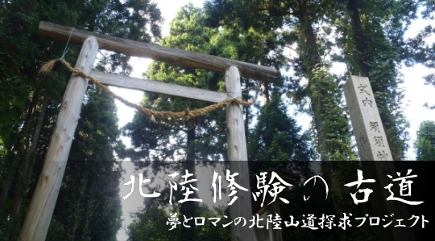

大陸から吹いた風が はるか日本海を越え 日本の山道を吹きぬけた

プロジェクトの展開
プロジェクトの活動分野は多岐にわたります。構成は一般の方々と各分野の識者の方々に参加いただきます。
一人ひとりが主体性を持ち、新しいふるさとの創生に汗を流せる環境づくり。
共に学び、共に楽しみ、共に働く。参加意識の高まりと達成感のあるプロジェクトを展開します。
基本プロジェクト活動構想
- 山道整備・自然・野生生物の調査、保護・育成
- 山道観光施設の整備・推進
■コース案内プレート・安全警告表示・インフォーメーションの設置・他 - 山道案内スペシャリスト・観光ボランティアの養成
- 一般参加型定期イベントの企画・開催
■全行程内のポイントでのろし上げ・全行程山道駅伝ラリー（全国公募）・他 - 人的交流・情報交換及び実証成果の発表フォーラムの定期開催
周知活動
- オフィシャル観光パンフレットの発行・ルート案内冊子製作
- オフィシャルホームページの製作・アップロード
- ビデオ・ＤＶＤの作成
観光ルートの提案・開発
- 周辺に点在する温泉地域・食・遊施設など観光資源の再編・活用
（和倉温泉・片山津温泉・粟津温泉・山代温泉・山中温泉・他施設） - 周辺空港を利用する国外・国内の誘客観光パック開発
（小松空港・能登空港・富山空港）